¹Qwen 团队 ²爱丁堡大学 ³斯坦福大学 ⁴清华大学
*同等贡献。†通讯作者。
2026-02-02；arXiv:2601.22966v1 [cs.CL]，2026 年 1 月 30 日。
我们研究 LLM 中新出现的 outlier 的功能作用，具体包括 attention sink（少数 token 持续获得很大的 attention logit）和 residual sink（少数固定维度在大多数 token 上持续具有很大的激活值）。我们假设，这些 outlier 与相应的归一化（例如 softmax attention 和 RMSNorm）共同作用，实际上会对其他非 outlier 分量进行重缩放。我们将这一现象称为 outlier 驱动的重缩放，并在不同模型架构和训练 token 数量下验证这一假设。这一视角统一了两类汇聚现象的起因与缓解方式。我们的主要结论和观察包括：（1）outlier 与归一化共同发挥作用：移除归一化会消除相应的 outlier，但会降低训练稳定性和性能；在保留归一化的情况下直接裁剪 outlier 会导致性能下降，说明 outlier 驱动的重缩放有助于训练稳定性。（2）outlier 更多地充当重缩放因子，而非贡献来源，因为 attention sink 和 residual sink 的最终贡献显著小于非 outlier 分量。（3）outlier 可以吸收到可学习参数中，或通过显式的门控重缩放加以缓解，从而改善训练性能（平均提升 2 分），并增强量化鲁棒性（W4A4 量化下下降 1.2 分）。
基于 Transformer 的 LLM 存在 outlier。这些极端值比常规激活值或 logit 高出数个数量级，带来了实际挑战：在模型量化过程中，它们主导了表示的动态范围（Yao et al., 2022; Xiao et al., 2023b;a; Wei et al., 2023; Abecassis et al., 2025），并可能导致浮点运算中的数值误差增大（Budzinskiy et al., 2025）。然而，仅通过裁剪来移除它们会严重损害模型性能（Kovaleva et al., 2021; Sun et al., 2024），这表明它们在 Transformer 中发挥着重要的功能作用。
Outlier 的一个突出实例是 attention sink（Xiao et al., 2023b）：一小部分 attention logit 比其余值更大，使少数特殊 token（sink token）持续获得较高的 attention 分数。近期研究表明，它们的形成与 softmax 归一化有内在联系（Bondarenko et al., 2023; An et al., 2025），且对应的 value 向量的范数显著小于非 sink token 的向量范数（Sun et al., 2024; An et al., 2025）。这说明，这些 sink token 并非利用异常大的 attention 分数来主导 attention 输出，而是将其作为 attention 中 softmax 归一化内部的缩放因子。GatedAttention（GA）的引入进一步支持了这一观点（Bondarenko et al., 2023; Qiu et al., 2025b; An et al., 2025）：显式的门控机制使模型能够执行这种重缩放，从而减轻对 attention sink 的依赖。另一种值得关注的 outlier 现象是 residual stream 中的巨幅激活（massive activation，MA）（Sun et al., 2024）：与 attention sink 相关的 token 常在特定维度上表现出极大的激活值；这些值经过归一化层之后，能够促进 attention sink 的形成（An et al., 2025）。
上述两类 outlier 具有一个共同的关键特征：它们通过归一化发挥作用。我们用“outlier 驱动的重缩放”统一描述这种行为，即 outlier 与归一化相互作用，对归一化后的非 outlier 分量进行重缩放。我们在残差中的另一类 outlier 上验证这一假设（Dettmers et al., 2022; Bondarenko et al., 2023）。如图 1 所示，这些 outlier 出现在绝大多数 token 的一组固定维度中，激活值比典型值高出数个数量级。实验表明，这些 outlier 与 attention sink 具有许多共同属性，因此我们将其称为 residual sink。值得注意的是，residual sink——
本句接第 2 页。
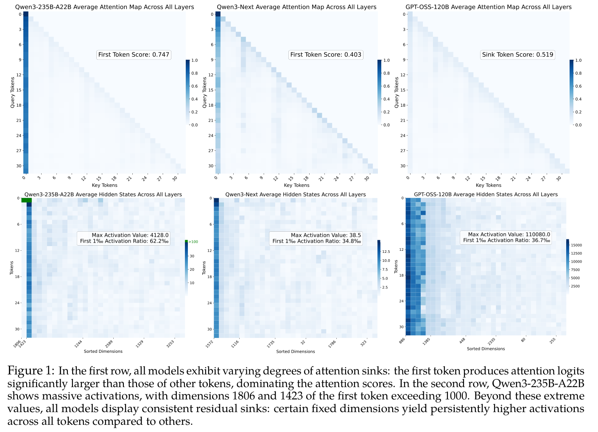
接第 1 页：
并不与特定输入绑定，这表明它们并非在传递特定于数据的特征。我们进一步验证，它们与 RMSNorm 层（Zhang & Sennrich, 2019）相互作用，执行 outlier 驱动的重缩放。大量实证证据支持这一假设，具体如下。
（1）移除归一化（Zhu et al., 2025）会减少 residual sink，但会损害模型性能和训练稳定性（第 3.1 节）。通过裁剪或架构修改抑制 outlier，也会造成性能下降（第 3.2 节）。
（2）我们观察到，在依赖 outlier 驱动的重缩放的模型中，容易出现 outlier 的维度所对应的 RMSNorm 权重，始终远小于均值（例如 0.006 对比 1）。这进一步表明，这些 outlier 维度主要充当重缩放因子，而非直接贡献于归一化输出。在这一性质成立时，我们证明，RMSNorm 之后特征范数的上界会随 outlier 幅度的增大而减小（附录 A.1）。
（3）residual sink 可以吸收到参数中，类似于将 attention sink 吸收到可学习偏置中（Sun et al., 2024; Agarwal et al., 2025），从而消除在 residual stream 中显式产生 outlier 的需要（第 3.3 节）。
（4）如果重缩放是其根本目的，那么显式引入重缩放应当能够减少 outlier。此前研究表明，attention 中的门控重缩放能够减少 attention sink（Bondarenko et al., 2023; An et al., 2025; Qiu et al., 2025b）；与此一致，我们的实验表明，在 RMSNorm 之后插入 GatedNorm，可以有效缓解 residual sink，同时保持甚至提升模型性能（第 3.4 节）。由于 outlier 更少、激活更平滑，使用 GatedNorm 训练的模型表现出更好的量化性能。
（5）门控重缩放降低模型对 outlier 的依赖，从而减轻其对会引发 outlier 的架构选择的敏感性。例如，FFN 中的 SwiGLU（Shazeer, 2020）通常通过生成较大的激活来支持 outlier 驱动的重缩放，因此优于基于 sigmoid 的 GLU；但加入门控重缩放后，GLU 能够达到或超过 SwiGLU 的性能（图 3）。
我们在广泛的模型上验证这一假设，包括标准 softmax attention（Vaswani et al., 2017）、线性 attention（Yang et al., 2024），以及具有 1B、7B 和 24B 参数的线性与全 attention 混合架构，训练数据规模从 120B 到 1T token 不等。在附录 A.2 中，我们从 outlier 驱动的重缩放视角总结了 attention sink 与 residual sink 的比较，涵盖其模式、功能作用和缓解方式。结果一致表明，softmax attention 和 RMSNorm 归一化处的 outlier 并非病态的附带产物，而是由重缩放需求驱动的因素。通过理解 residual sink 的功能作用，我们提出简单而有效的替代方案——
本句接第 3 页。
接第 2 页：
在保留其功能收益的同时减少 residual sink，从而改善训练与量化性能。
本节展示开源 LLM 中的 outlier，并考察它们之间的关系。我们关注采用前置归一化的 Transformer。对于长度为 \(L\) 的输入序列，模型首先将 token embedding 为隐藏状态 \(H_{0} \in \mathbb{R} ^{L\times d}\)，其中 \(d\) 为隐藏维度。随后，这些状态经过 \(D\) 层处理。将第 \(i\) 层函数记为 \(F_{i}\)，隐藏状态更新为：
\(H_{i+1} = H_{i} + F_{i}(H_{i})\)，\(i = 0, 1, \ldots , D - 1\)。
隐藏状态 \(H_{i}\) 也称为 residual stream，是本研究的主要关注对象。
图 1 中，我们分析四种 outlier 模式不同的模型：Qwen3-235B-A22B（Yang et al., 2025）、Qwen3-Next（Yang et al., 2025）、GPT-OSS（Agarwal et al., 2025）和 DeepSeek-V3（Liu et al., 2024）。对于每个模型，我们使用相同的一组输入序列，记录所有层的 attention 图与残差激活。为便于观察，图 1 对 attention 图和隐藏状态在所有层上取平均。由于隐藏维度 \(d\) 很大，将全部维度可视化并不现实。为了突出 outlier 模式，我们按总体激活幅度重新排列特征维度。具体而言，对于每个维度 \(j\)，我们计算其在全部 token、层和输入上的平均绝对激活值：
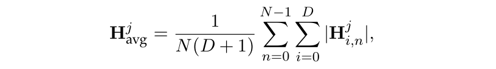
其中，\(H^{j}_{i,n}\) 是第 \(i\) 层第 \(n\) 个 token 在第 \(j\) 维上的激活值，\(N\) 是 token 数量。随后，我们按 \(H^{avg}\) 降序排列各维度。重新排序后，持续具有大激活值的维度出现在可视化结果的左侧，形成与 attention sink 模式十分相似的结构。
在 Qwen3-235B-A22B 中，第一个 token 持续从几乎所有其他 token 获得较高 attention 分数，表现出 attention sink。相应地，这个 token 在两个维度（例如 1806 和 1423）上表现出 MA。除特定 token 的 MA 外，我们发现，大多数 token 在维度 1423 上持续具有较大的激活值。这种模式在不同输入之间保持稳定，在激活可视化中呈现为深色竖条，形状类似 attention sink。我们随后发现，它在归一化时产生的重缩放效果与 attention sink 非常相似，因此将其称为 residual sink。附录图 8 中的 DeepSeek-V3 也表现出类似模式：attention sink、MA 和 residual sink 同时存在。
Qwen3-Next 在 attention 中引入门控来执行门控重缩放，从而降低对 attention logit outlier 的依赖。因此，其 attention sink 比其他模型更弱。此外，其 residual stream 中的最大激活幅度仅为 38.5，未观察到明显的 MA。尽管如此，维度 1572 在不同 token 上持续表现出高于所有其他维度的较大激活值，清楚地体现了 residual sink。
GPT-OSS 引入可学习汇聚，实际上消除了真实输入 token 上的 attention sink。MA 也随之消失：真实 token 的隐藏状态不再在特定维度上出现极端值。这与此前的解释一致：attention sink 相当于 softmax attention 中独立于输入的偏置；MA 通过在归一化后产生近似 one-hot 的向量来实现这一点，这些向量投影到 key 空间时只激活少数固定的矩阵列。当显式提供可学习偏置（例如专用的汇聚 key）时，模型就不再需要从真实 token 生成 MA。然而，即使没有 attention sink 和 MA，GPT-OSS 中仍然存在 residual sink。
本节详细讨论这些 outlier 的作用，并提供实证证据。我们在前置归一化 Transformer 上开展实验，紧密遵循 Llama3（Dubey et al., 2024）和 Qwen3（Yang et al., 2025）中稠密模型的设计。由于消融和对比条件很多，我们主要在一致设置下评估所有变体：用 120B token 训练一个 2B 参数模型。当结构变化影响模型参数量时，我们相应调整 FFN 宽度，使总参数量保持不变。完整实验设置见附录 A.4。我们的分析分为五部分。
第 3.1 节表明，将归一化层替换为 Dynamic Tanh（DyT）等逐点函数（Zhu et al., 2025; Chen et al., 2025），能显著减少 outlier。然而，由于 DyT 无法提供 outlier 驱动的重缩放，训练稳定性与最终性能都会下降。
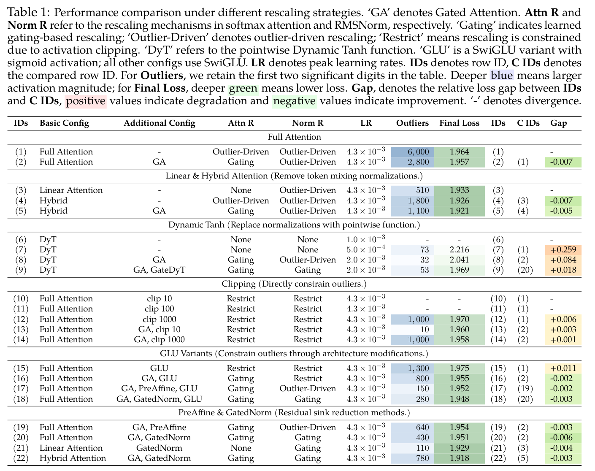
第 3.2 节表明，即使保留归一化，直接约束 outlier（通过激活裁剪）也会破坏 outlier 驱动的重缩放机制，并损害模型性能，有时甚至导致训练发散。这也解释了为什么抑制 outlier 生成的架构变化（例如使用基于 sigmoid 的 GLU 变体）往往性能较差（Shazeer, 2020）。
第 3.3 节表明，outlier 可以从激活无损地转移到可学习参数中：在归一化前引入轻量可学习向量之后，模型仍然能够执行 outlier 驱动的重缩放，无须在 residual stream 中产生大数值，而是使用经可学习向量放大的投影。
第 3.4 节表明，通过门控实现重缩放，可以在不降低性能的情况下减少 residual sink。
第 3.5 节发现，一旦引入门控重缩放、减轻模型对 outlier 的依赖，其对架构选择的敏感性就会降低。具体而言，DyT 能够稳定收敛，基于 sigmoid 的 GLU 在性能上能够达到甚至超过 SwiGLU。
Transformer 层中的归一化存在于两处：attention 中的 softmax，以及归一化层（例如 RMSNorm）。对于 attention，已有研究表明，softmax 归一化是 attention sink 的主要原因（Gu et al., 2024b; An et al., 2025）。将 softmax 替换为 sigmoid attention（Gu et al., 2024b），或将分母与可学习偏置结合（Sun et al., 2024; Dong et al., 2024; Agarwal et al., 2025）时，attention sink 会消失。
已有研究发现，表现出 attention sink 的 token 产生的 value 向量范数比其他 token 更小（Sun et al., 2024; An et al., 2025）。从 outlier 驱动的重缩放视角看，attention sink 使模型能够调整 attention 输出中接近零的贡献（来自 sink token）与其他贡献的相对比例，从而控制 attention 结果的范数。这一解释也说明了 sigmoid attention 中观察到的训练不稳定性：缺少归一化所带来的重缩放时，初始 attention 输出具有较大范数（Ramapuram et al., 2024）。
我们的实验发现，将基于 softmax 的 attention 替换为线性 attention（Yang et al., 2024）——
本句接第 5 页。
接第 4 页：
（其 token 混合步骤不进行归一化）也会减少 MA。如表 1 第（3）–（5）行所示，线性 attention 模型的峰值激活降至 510，全 attention 与线性 attention 按 1:3 比例组合的混合模型降至 1100，而全 attention 基线为 6000。值得注意的是，虽然线性 attention 消除了 MA，residual sink 仍然存在。
对于残差中的归一化层，已有研究表明，将 RMSNorm 替换为 DyT（定义为 \(\operatorname{DyT}(x) = \gamma \cdot \operatorname{tanh}(\alpha x) + \beta\)），会显著减少 outlier（He et al., 2024; Owen et al., 2025a）。关键区别在于重缩放：RMSNorm 根据整个隐藏状态的统计量（例如均方根）缩放每个维度，使一个维度中的 outlier 能够影响所有其他维度。相比之下，DyT 仅执行逐点运算，因此任何维度都不会直接影响其他维度。
实验确认了这一局限。使用与基线相同的学习率训练 DyT 模型时，优化会迅速发散。为解决这一问题，我们对所有包含 DyT 的设置进行超参数搜索，评估学习率 {5 × \(10^{-4}\), 1 × \(10^{-3}\), 2 × \(10^{-3}\), 4 × \(10^{-3}\)}，并报告性能最好的配置。原始 DyT 变体只有在最小学习率 5 × \(10^{-4}\) 下才收敛，其峰值激活幅度为 73，但相比基线，损失显著增加了 +0.259（表 1 第（7）行对比第（1）行）。这表明，outlier 驱动的重缩放效果对于训练稳定性和最终性能都至关重要。
综合来看，移除归一化会破坏 outlier 驱动的重缩放机制。因此，模型停止生成 outlier，但通常要付出训练稳定性和性能下降的代价。
现在，我们考察保留归一化时抑制 outlier 的效果。为分离不同 outlier 的影响，我们考虑两种设置：（1）表现出 attention sink、MA 和 residual sink 的模型；（2）通过 Gated Attention（GA）（Bondarenko et al., 2023; An et al., 2025; Qiu et al., 2025b）减少 attention sink 和 MA、主要表现出 residual sink 的模型。
首先，我们对全 attention 基线的残差施加激活裁剪（表 1 第（1）行），将超过阈值的激活限制在该阈值。当裁剪阈值为 100 或更低时，训练早期就会发散。阈值为 1000 时，损失曲线频繁出现尖峰，并收敛到更高的最终损失（+0.006，第（12）行）。这与此前观察一致：训练后对模型的 MA 或 attention sink 进行裁剪，会严重损害性能，输出往往接近随机。
其次，我们将减少 attention sink 和 MA 的 GA 与残差裁剪结合。我们发现，一旦通过 GA 在 softmax attention 中重新引入显式重缩放，即使激进地裁剪到 10，模型也能收敛，但性能仍会受损（+0.003，第（13）行）。此外，在相同设置下，裁剪到 1000 带来的性能下降小得多（+0.001，第（14）行）。
这些结果说明两点：（i）attention 中的 outlier 驱动的重缩放机制遭到破坏时，是不稳定性的主要来源；（ii）residual sink 也对性能有实质性贡献，直接约束它们而不补偿会导致性能下降。
除裁剪外，我们还探索一种干预更小的限制 outlier 的方法：修改一个看似无关的组件——激活函数，以进一步验证上述结论。已有研究观察到，Transformer 中的 outlier 主要来自 FFN（Oh et al., 2024; Yona et al., 2025）。大多数现代模型采用 GLU 的变体，尤其是 SwiGLU（Shazeer, 2020）：
\(\operatorname{SwiGLU}(x) = W_{down}((W_{up}x) \odot \operatorname{swish}(W_{gate}x))\)。
在 SwiGLU 中，outlier 出现在 \(W_{up}x \odot \operatorname{swish}(W_{gate}x)\) 项中，并由 \(W_{down}\) 放大。
从概念上说，将 swish 激活替换为范围有界于 (0, 1) 的 sigmoid，自然会限制 FFN 输出的幅度，并有效抑制 outlier 生成。这一修改将 SwiGLU 变为标准 GLU。如表 1 所示，与 SwiGLU 相比，GLU 收敛时的 outlier 幅度显著更小（1300 对比 6000），但性能下降了 +0.011。这与此前结论一致：使用 sigmoid 的 GLU 变体不如使用 swish 或 GELU 的变体（Shazeer, 2020）。第 3.5 节进一步观察到，当门控等显式重缩放减轻模型对 outlier 驱动的重缩放的依赖时，GLU 甚至能够略优于 SwiGLU。
前面各节确立了 outlier 在归一化中的功能作用，且在不补偿的情况下移除它们会损害性能。在理论上，我们证明，RMSNorm 后特征范数的上界会随 outlier 增大而减小（附录 A.1），使 outlier 能够重缩放特征范数。现在我们提出：能否在减少显式 outlier 的同时保留这一功能？
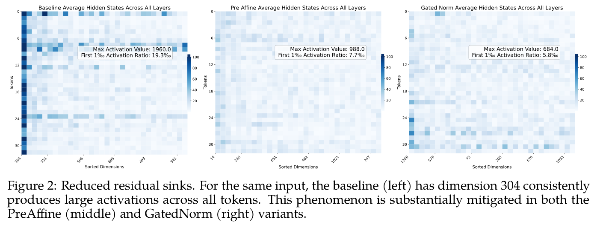
已有研究表明，可学习 sink token 能够将 attention sink 从输入 logit 转移到固定参数中（Sun et al., 2024; Dong et al., 2024; Agarwal et al., 2025），在保留 outlier 驱动的重缩放的同时移除真实 token 中的 outlier。受此启发，我们在 RMSNorm 之前引入可学习的逐元素缩放向量，称为 PreAffine。具体而言：
\(\operatorname{PreAffineRMSNorm}(x) = \operatorname{RMSNorm}(\lambda _{1} \odot x)\)，
其中 \(\lambda _{1} \in \mathbb{R} ^{d}\) 为可训练向量。由于 residual sink 在几乎所有 token 上持续出现在相同维度，\(\lambda _{1}\) 能够学会放大这些特定维度。因此，即使输入激活 \(x\) 不含 outlier，缩放后的输入 \(\lambda _{1} \odot x\) 仍可在选定维度上包含大数值，从而照常实现 outlier 驱动的重缩放。
加入 PreAffine 后，网络中的最大激活从 2800 降至 640，最终损失略有改善（−0.003，表 1 第（19）行）。我们还在一个 24.6B-A1.7B 混合 MoE 模型上评估了多种 outlier 减少方法（配置详见第 4 节），并在图 2 中报告相应激活统计。左图为通过 GA 抑制 MA 的基线；其中维度 304 持续表现出高于其他维度的激活，体现了 residual sink。中图是在同一模型上应用 PreAffine 的结果。任何单一维度上的持续高激活均消失，峰值激活从 1960 降至 988。
\(\lambda _{1}\) 的重缩放能力与标准 RMSNorm 参数 \(\lambda\) 不同。\(\lambda _{1}\) 与 RMSNorm 相互作用：\(\lambda _{1}\) 少数维度上的大数值控制缩放后输入的 RMS，从而对非 outlier 维度的强度进行重缩放。我们分析各模型的参数 \(\lambda\)（标准 RMSNorm 权重）和 \(\lambda _{1}\)（PreAffine）；完整结果见附录 A.5.1。我们识别偏离 1 最大的维度，因为这些仿射参数影响最强。观察如下：
（1）在基线模型中，\(\lambda\) 的大多数维度保持接近 1。但维度 304 在所有层上持续偏离 1，最小值达到 0.004。值得注意的是，基线中的 residual sink 也位于维度 304。这说明，residual sink 导致的大激活在归一化后立即被缩小。这表明，一旦某个维度完成其 outlier 驱动的重缩放作用，其下游影响就会被有意减弱。这与 attention sink token 的 value 向量范数较小的观察相呼应。
（2）在使用 PreAffine 的模型中，\(\lambda _{1}\) 相对 1 的偏离显著大于 \(\lambda\)。例如，维度 1326 的 \(\lambda _{1}\) 达到 7.19，而同一维度相应的 \(\lambda\) 仅为 0.06。这进一步支持了如下观点：outlier 通过归一化塑造表示，而其直接贡献受到抑制。
虽然 PreAffine 减少了 residual stream 中的 outlier，但归一化计算内部（即 \(\lambda _{1} \odot x\) 中）仍会出现 outlier。为解决这一问题，我们借鉴 GA，引入 GatedNorm：在每个归一化层之后应用逐元素的低秩自门控机制。形式上，给定 \(y = \operatorname{RMSNorm}(x)\)，我们计算：
\(y_{g} = \sigma (W_{up}(\operatorname{swish}(W_{down}(y))))\)，\(y\)′ \(= y_{g} \odot y\)，
其中 \(W_{down} \in \mathbb{R} ^{d\times r}\)，\(W_{up} \in \mathbb{R} ^{r\times d}\)，\(r \ll d\)（例如 \(r = 16\)），\(\sigma\) 是 sigmoid 激活。
GatedNorm 仅增加 3.7M 参数，约占 2B 模型总参数量的 2%。为保持参数量相等，我们略微减小 FFN 容量。在 2B 稠密模型中，GatedNorm 带来——
译注：上述“3.7M”和“2%”均为原文数值；3.7M / 2B 约为 0.185%，两者不一致，未擅自更改。
本句接第 7 页。
接第 6 页：
约 5% 的延迟开销；随着模型规模增大，这一开销进一步下降，尤其是在 MoE 中。更详细的性能分析见附录 A.3。我们在表 1 中若干仍表现出 residual sink 的设置上考察 GatedNorm。如第（20）–（22）行所示，GatedNorm 进一步降低了使用 GatedAttention 的模型（包括全 attention、混合 attention 和线性 attention）的损失与 outlier 幅度。
图 2（右）表明，在 24.6B-A1.7B 混合 MoE 模型中，GatedNorm 也抑制了 residual sink。我们分析使用 GatedNorm 的模型所学习到的缩放参数 \(\lambda\)（附录 A.5.1，图 7）。\(\lambda\) 相对 1 的最大偏离仅为 0.73，而基线为 0.004、PreAffine 模型为 0.06。这说明，当网络不再依赖 outlier 驱动的重缩放时，就不再需要在归一化之后抑制某个特定维度。因此，归一化输出变得更平滑、更适合量化。
译注：原文将 0.73、0.004、0.06 称为“相对 1 的偏离”，但图 5–7 标注的是权重值；此处保留原文措辞与数值，未将其改写为偏离量。
我们还比较不同的门控变体，关注两个设计选择：门控粒度（逐元素，分数形状为 d；或逐张量，分数形状为 1），以及激活函数（sigmoid、tanh、silu、恒等函数）。结果如下。
首先，采用 sigmoid 激活的逐元素门控相对于基线带来最显著的性能提升。采用 sigmoid 的逐张量门控减少 residual sink 的程度与逐元素门控相似，但最终性能接近基线，且始终低于逐元素变体。这表明，两种粒度均能缓解 outlier，支持 outlier 驱动的重缩放假设；但更细粒度的逐元素重缩放能够实现更有效的调制，因此性能更好。
其次，使用逐元素门控时，将 sigmoid 替换为 tanh、SiLU，或不使用激活（类似 DiT 中的 adaLN）（Perez et al., 2018; Xu et al., 2019; Peebles & Xie, 2023; Karras et al., 2024），会导致训练中的 outlier 动态不稳定。这说明，sigmoid 的有界性及其在零附近的精细控制有利于稳定重缩放，与 Chen et al.（2025）一致。此外，逐张量门控中，所有非 sigmoid 激活，包括 tanh、SiLU 或不使用激活，都会导致训练发散，进一步凸显了 sigmoid 这类行为良好且有界的激活对稳定门控的必要性。
第 3.1 和 3.2 节表明，DyT 与基于 sigmoid 的 GLU 均不如基线。一种可能解释是，它们的架构在本质上限制了 outlier 驱动的重缩放机制。本节考察，通过 GatedNorm 显式提供重缩放，能否降低对 outlier 的依赖，从而恢复其性能。
我们首先为 DyT 配备 GA（表 1 第 8 行），在 attention 模块中提供显式重缩放。这使模型能够在基线学习率（4.3e−3）下稳定训练，尽管其最优学习率为 2e−3。这进一步确认了 attention 重缩放在训练稳定性中的关键作用。随后，我们类似于 GatedNorm，在 DyT 层之后应用低秩自门控机制，得到 GatedDyT（表 1 第 9 行）。加入这一机制后，DyT 与 RMSNorm 基线的性能差距从 0.084 缩小到 0.018，凸显了显式重缩放不仅在 attention 中重要，在归一化层本身也同样重要。
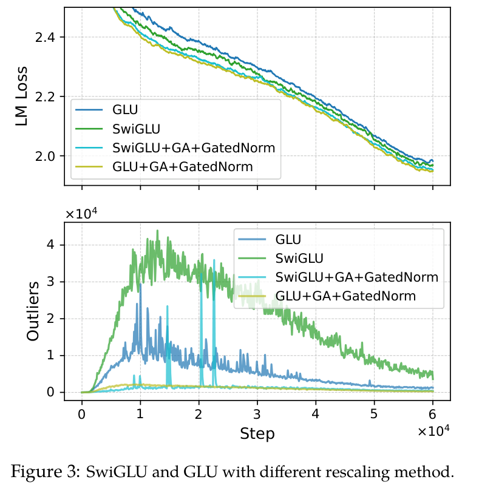
我们进一步比较加入 GatedNorm 前后的 SwiGLU 与 GLU。如图 3（下）所示，原始 SwiGLU 在训练期间产生超过 4 × \(10^{4}\) 的最大激活，而原始 GLU 的峰值约为 1 × \(10^{4}\)。由于缺乏 outlier 驱动的重缩放，GLU 收敛到更高损失（+0.011）。使用 GatedNorm 后，相同设置下 GLU 略优于 SwiGLU（第 16 行为 −0.002；第 17 行为 −0.003）。图 3（上）表明，加入门控后，GLU 的损失曲线从各变体中最差（蓝色）变为最好（绿色）。
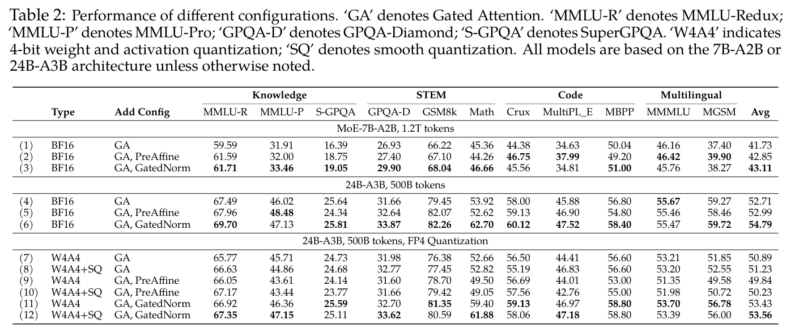
这表明，GLU 与 SwiGLU 的性能差距主要源于它们支持 outlier 驱动的重缩放的能力不同。这也解释了为什么在需要这种重缩放时，更容易产生 outlier 的高阶激活函数（例如 \(\operatorname{ReLU}^{2}\)（Zhang et al., 2024）或 PolyNorm（Zhuo et al., 2024））可能有优势。当 GatedNorm 显式提供重缩放时，模型对影响 outlier 生成的架构选择就会变得更鲁棒。
本节在大规模设置下评估 GatedAttention 与 GatedNorm 或 PreAffine 的不同组合。由于表 1 第（5）行显示混合模型具有优势，我们参照 Qwen3-Next，在高效混合 MoE 模型上开展两种设置的实验：（1）7.4B 参数、1.7B 激活参数的模型（MoE-7B-A-2B），训练 1.2T token；（2）24.6B 参数、2.7B 激活参数的模型（MoE-24B-A3B），训练 500B token。在这一设置下，GatedNorm 的延迟开销低于 3%。完整细节见附录 A.4.1。
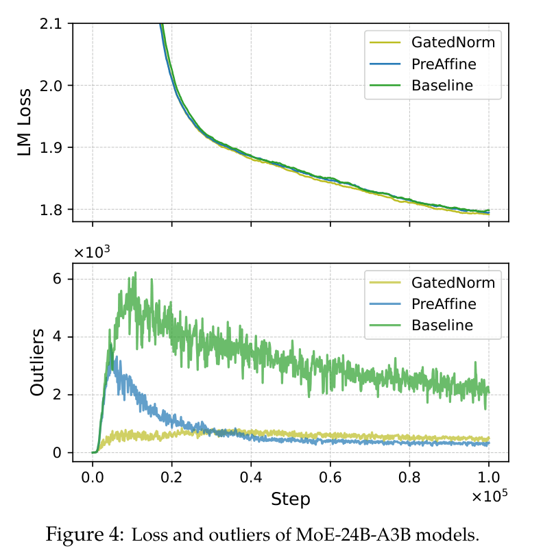
图 4 展示 MoE-24B-A3B 模型的训练损失曲线和 outlier。观察包括：（1）基线的 outlier 在训练早期迅速增大，随后随着学习率下降而逐渐减小。PreAffine 模型也在初期（训练前 10% 内）出现 outlier 激增，但随后迅速下降。一种可能解释是，可学习缩放因子 \(\lambda _{1}\) 的初始幅度不足以充分支持 outlier 驱动的重缩放，迫使模型暂时依赖激活 outlier；随着训练推进、\(\lambda _{1}\) 的特定维度变大，outlier 被“吸收”进参数。GatedNorm 在早期没有 outlier 激增，整个训练过程中始终保持较低激活幅度，表明其对 outlier 驱动的重缩放依赖更小。（2）在训练中后期出现明显性能差距，GatedNorm 达到更低的最终损失。
表 2 在 BF16 和量化设置下比较不同 outlier 缓解策略。详细量化配置见附录 A.4.2。由于 FP8 量化带来的变化相对较小，我们关注更激进的 FP4 W4A4 量化。结果表明，PreAffine 和 GatedNorm 在两种模型规模上均带来一致收益，其中 GatedNorm 的提升更大。值得注意的是，GatedNorm 在知识任务上相对基线提升 +1.0 分，在 STEM 和代码任务上提升超过 +2.0 分。
在 FP4 量化下，我们观察到：（1）对于仅使用 GA 和 PreAffine 的模型，SmoothQuant（Xiao et al., 2023a）带来平均 +0.5 分收益，高于其对 GatedNorm 的收益，这说明——
本句接第 9 页。
接第 8 页：
GatedNorm 的重缩放在很大程度上减轻了对 outlier 的敏感性；（2）GatedNorm 在 FP4 量化后的性能下降最小（−1.23 分），相比之下 GA 为 −1.50，PreAffine 为 −2.76。在 MGSM 基准上，只有 GatedNorm 将下降控制在 5 分以内，所有其他方法均损失近 10 分。
这种更好的量化鲁棒性与我们对门控重缩放某项性质的观察一致：它表现出抑制 outlier 的行为，\(|y|\) 较大的维度往往获得较小的门控分数 \(y_{g}\)，产生更平滑的最终激活。总体而言，PreAffine 对 outlier 进行迁移，其思路类似可学习汇聚和 SmoothQuant（Xiao et al., 2023a），但仍依赖 outlier 来执行 outlier 驱动的重缩放。相比之下，GatedNorm 提供显式门控，在整个网络中产生本质上更平滑的激活，并实现更好的量化鲁棒性。
Transformer 中的 outlier 已得到广泛研究。在 BERT 模型中，固定维度上的 outlier 主要归因于 LayerNorm 的权重与偏置参数（Bondarenko et al., 2021; Kovaleva et al., 2021; Wei et al., 2022），并与特殊 token 的 attention 模式密切相关（Puccetti et al., 2022）。这一现象类似 GPT 风格模型中的 attention sink，并显著影响模型性能（Kovaleva et al., 2021; Xiao et al., 2023b）。BERT 中讨论的 outlier，大体对应自回归模型中的 MA（Sun et al., 2024; Gu et al., 2024b; Yu et al., 2024）。这些 MA 通常源自语义稀疏的特殊 token，在 FFN 中较早出现，并通过 residual stream 传播，持续影响后续层的 attention 分布（Sun et al., 2024; Oh et al., 2024; Gu et al., 2024b; Yona et al., 2025）。
若干研究发现，GPT 模型的固定维度中会持续出现与输入无关的 outlier（Dettmers et al., 2022）。这些 outlier 并不直接关联 attention sink（He et al., 2024; An et al., 2025）。He et al.（2024）进一步将这些 outlier 归因于归一化本身，指出即使移除 LayerNorm 权重，它们仍然存在。由于 outlier 会损害训练和推理量化，多种方法致力于缓解其影响。常见技术包括逐行、逐通道、逐组缩放，以限制 outlier 造成的量化误差（Yao et al., 2022; Xiao et al., 2023a; Wei et al., 2023; Abecassis et al., 2025），以及通过 Hadamard 变换在不同维度间重新分布 outlier（Xi et al., 2023; Wang et al., 2025）。
其他研究关注在训练期间减少 outlier。从优化角度看，增大权重衰减、gradient 裁剪（Ahmadian et al., 2023）、约束权重方差（Owen et al., 2025b;a; Xie et al., 2026），或加入显式正则化损失项（Liang et al., 2025）等策略都能抑制 outlier。一些研究还考察 Adam 优化器是否导致预训练中的 outlier（Kaul et al., 2024; He et al., 2024; Xie et al., 2026）。从架构角度看，已有研究发现 outlier 与归一化有很强的联系，并提出移除归一化以消除 outlier（He et al., 2024; Owen et al., 2025a;b）。我们的研究表明，通过架构干预显式替代 outlier 驱动的重缩放，即使继续使用 Adam、标准训练方案和归一化，也能在激活幅度小得多的情况下训练模型。
与我们最相关的是研究 outlier 功能作用的工作。Bondarenko et al.（2023）和 An et al.（2025）提出，attentionoutlier充当上下文感知的缩放因子，并证明在 attention 中引入门控缩放可以减少attentionoutlier。Karras et al.（2020）发现，归一化是 StyleGAN 中间特征图中 outlier 的来源，这些 outlier 在归一化时用于缩放信号。该研究进一步表明，即使没有归一化，通过门控生成的依赖输入的卷积权重也能复现这一缩放效果。adaLN 也采用了这种门控缩放（Perez et al., 2018; Xu et al., 2019; Peebles & Xie, 2023; Karras et al., 2024）。我们的工作将这一洞见扩展至 LLM 中的 residual sink，强调 outlier 驱动的重缩放在 Transformer 中广泛存在，并通过一系列针对性的架构干预提供系统性证据。
本文认为，LLM 中的 outlier 并非仅为附带产物，而是具有功能作用。它们与归一化机制（softmax 和 RMSNorm）协同，执行 outlier 驱动的重缩放，调整非 outlier 特征的幅度。这一机制对稳定训练和良好性能至关重要。移除 outlier 并破坏 outlier 驱动的重缩放会损害模型。通过显式提供门控重缩放，我们可以在保持甚至提升性能的同时减少激活 outlier。此外，显式实现重缩放会降低对架构选择的敏感性。这些方法还能产生更平滑的激活和显著更好的量化鲁棒性，尤其是在激进的低比特设置下。
本研究通过实证证明了 outlier 驱动的重缩放在网络训练中的重要性，并表明模型能够利用 RMSNorm 等归一化来调整特征范数。然而，我们没有研究为什么这种重缩放对于有效训练或表示学习是必要的。对重缩放作用的更深入理论理解，仍是一个开放问题。
Felix Abecassis, Anjulie Agrusa, Dong Ahn, Jonah Alben, Stefania Alborghetti, Michael Andersch, Sivakumar Arayandi, Alexis Bjorlin, Aaron Blakeman, Evan Briones, 等 使用 nvfp4 预训练 LLM. arXiv preprint arXiv:2509.25149, 2025.
Sandhini Agarwal, Lama Ahmad, Jason Ai, Sam Altman, Andy Applebaum, Edwin Arbus, Rahul K Arora, Yu Bai, Bowen Baker, Haiming Bao, 等 gpt-oss-120b 与 gpt-oss-20b 模型卡. arXiv preprint arXiv:2508.10925, 2025.
Arash Ahmadian, Saurabh Dash, Hongyu Chen, Bharat Venkitesh, Zhen Stephen Gou, Phil Blunsom, Ahmet Üstün, and Sara Hooker. 大规模量化的有趣性质. Advances in Neural Information Processing Systems, 36:34278–34294, 2023.
Yongqi An, Xu Zhao, Tao Yu, Ming Tang, and Jinqiao Wang. LLM 中的系统性 outlier. arXiv preprint arXiv:2502.06415, 2025.
Jacob Austin, Augustus Odena, Maxwell Nye, Maarten Bosma, Henryk Michalewski, David Dohan, Ellen Jiang, Carrie Cai, Michael Terry, Quoc Le, 等 使用 LLM 进行程序合成. arXiv preprint arXiv:2108.07732, 2021.
Yelysei Bondarenko, Markus Nagel, and Tijmen Blankevoort. 理解并克服高效 Transformer 量化的挑战. arXiv preprint arXiv:2109.12948, 2021.
Yelysei Bondarenko, Markus Nagel, and Tijmen Blankevoort. 可量化的 Transformer：通过帮助 attention 头不执行操作来移除 outlier. Advances in Neural Information Processing Systems, 36: 75067–75096, 2023.
Stanislav Budzinskiy, Wenyi Fang, Longbin Zeng, and Philipp Petersen. LLM 的数值误差分析. arXiv preprint arXiv:2503.10251, 2025.
Federico Cassano, John Gouwar, Daniel Nguyen, Sydney Nguyen, Luna Phipps-Costin, Donald Pinckney, Ming-Ho Yee, Yangtian Zi, Carolyn Jane Anderson, Molly Q Feldman, 等 MultiPL-E：一种可扩展的多语言神经代码生成基准评估方法. IEEE Transactions on Software Engineering, 49(7):3675–3691, 2023.
Mingzhi Chen, Taiming Lu, Jiachen Zhu, Mingjie Sun, and Zhuang Liu. 更强的无归一化 Transformer. arXiv preprint arXiv:2512.10938, 2025.
Karl Cobbe, Vineet Kosaraju, Mohammad Bavarian, Mark Chen, Heewoo Jun, Lukasz Kaiser, Matthias Plappert, Jerry Tworek, Jacob Hilton, Reiichiro Nakano, 等 训练验证器以求解数学文字题. arXiv preprint arXiv:2110.14168, 2021.
Tim Dettmers, Mike Lewis, Younes Belkada, and Luke Zettlemoyer. GPT3.int8()：面向大规模 Transformer 的 8 位矩阵乘法. Advances in neural information processing systems, 35:30318–30332, 2022.
Xin Dong, Yonggan Fu, Shizhe Diao, Wonmin Byeon, Zijia Chen, Ameya Sunil Mahabaleshwarkar, ShihYang Liu, Matthijs Van Keirsbilck, Min-Hung Chen, Yoshi Suhara, 等 Hymba：面向小语言模型的混合头架构. arXiv preprint arXiv:2411.13676, 2024.
Xinrun Du, Yifan Yao, Kaijing Ma, Bingli Wang, Tianyu Zheng, King Zhu, Minghao Liu, Yiming Liang, Xiaolong Jin, Zhenlin Wei, 等 SuperGPQA：将 LLM 评估扩展至 285 个研究生学科. arXiv preprint arXiv:2502.14739, 2025.
Abhimanyu Dubey, Abhinav Jauhri, Abhinav Pandey, Abhishek Kadian, Ahmad Al-Dahle, Aiesha Letman, Akhil Mathur, Alan Schelten, Amy Yang, Angela Fan, 等 Llama 3 模型家族. arXiv e-prints, pp. arXiv–2407, 2024.
Aryo Pradipta Gema, Joshua Ong Jun Leang, Giwon Hong, Alessio Devoto, Alberto Carlo Maria Mancino, Rohit Saxena, Xuanli He, Yu Zhao, Xiaotang Du, Mohammad Reza Ghasemi Madani, 等 我们已经完成对 MMLU 的研究了吗？ In Proceedings of the 2025 Conference of the Nations of the Americas Chapter of the Association for Computational Linguistics: Human Language Technologies (Volume 1: Long Papers), pp. 5069–5096, 2025.
Alex Gu, Baptiste Rozière, Hugh Leather, Armando Solar-Lezama, Gabriel Synnaeve, and Sida I Wang. CruxEval：代码推理、理解与执行基准. arXiv preprint arXiv:2401.03065, 2024a.
Xiangming Gu, Tianyu Pang, Chao Du, Qian Liu, Fengzhuo Zhang, Cunxiao Du, Ye Wang, and Min Lin. 语言模型何时出现 attention sink：实证视角. arXiv preprint arXiv:2410.10781, 2024b.
Bobby He, Lorenzo Noci, Daniele Paliotta, Imanol Schlag, and Thomas Hofmann. 理解并尽量减少 Transformer 训练中的 outlier 特征. Advances in Neural Information Processing Systems, 37:83786–83846, 2024.
Dan Hendrycks, Collin Burns, Saurav Kadavath, Akul Arora, Steven Basart, Eric Tang, Dawn Song, and Jacob Steinhardt. 使用 MATH 数据集衡量数学问题求解能力. arXiv preprint arXiv:2103.03874, 2021.
Tero Karras, Samuli Laine, Miika Aittala, Janne Hellsten, Jaakko Lehtinen, and Timo Aila. 分析并改善 StyleGAN 的图像质量. In Proceedings of the IEEE/CVF conference on computer vision and pattern recognition, pp. 8110–8119, 2020.
Tero Karras, Miika Aittala, Jaakko Lehtinen, Janne Hellsten, Timo Aila, and Samuli Laine. 分析并改善扩散模型的训练动态. In Proceedings of the IEEE/CVF Conference on Computer Vision and Pattern Recognition, pp. 24174–24184, 2024.
Prannay Kaul, Chengcheng Ma, Ismail Elezi, and Jiankang Deng. 从 attention 到激活：揭开 LLM 的谜团. arXiv preprint arXiv:2410.17174, 2024.
Olga Kovaleva, Saurabh Kulshreshtha, Anna Rogers, and Anna Rumshisky. BERT 破坏者：扰乱 Transformer 的 outlier 维度. arXiv preprint arXiv:2105.06990, 2021.
Guang Liang, Jie Shao, Ningyuan Tang, Xinyao Liu, and Jianxin Wu. TWEO：无极端 outlier 的 Transformer 让 FP8 训练和量化变得简单. arXiv preprint arXiv:2511.23225, 2025.
Aixin Liu, Bei Feng, Bing Xue, Bingxuan Wang, Bochao Wu, Chengda Lu, Chenggang Zhao, Chengqi Deng, Chenyu Zhang, Chong Ruan, 等 DeepSeek-V3 技术报告. arXiv preprint arXiv:2412.19437, 2024.
Jaehoon Oh, Seungjun Shin, and Dokwan Oh. 纸牌屋：LLM 中的巨幅权重. arXiv preprint arXiv:2410.01866, 2024.
OpenAI. 多语言大规模多任务语言理解（MMMLU）, 2024. 数据集可在 Hugging Face 获取。
Louis Owen, Nilabhra Roy Chowdhury, Abhay Kumar, and Fabian Güra. 对 LLM 中巨幅激活的精细分析. arXiv preprint arXiv:2503.22329, 2025a.
Louis Owen, Abhay Kumar, Nilabhra Roy Chowdhury, and Fabian Güra. 在 LLM 预训练中通过权重重缩放控制方差. arXiv preprint arXiv:2503.17500, 2025b.
William Peebles and Saining Xie. 基于 Transformer 的可扩展扩散模型. In Proceedings of the IEEE/CVF international conference on computer vision, pp. 4195–4205, 2023.
Ethan Perez, Florian Strub, Harm De Vries, Vincent Dumoulin, and Aaron Courville. FiLM：使用通用条件层进行视觉推理. In Proceedings of the AAAI conference on artificial intelligence, volume 32, 2018.
Giovanni Puccetti, Anna Rogers, Aleksandr Drozd, and Felice Dell’Orletta. 扰乱 Transformer 的 outlier 维度由频率驱动. In Findings of the Association for Computational Linguistics: EMNLP 2022, pp. 1286–1304, 2022.
Zihan Qiu, Zeyu Huang, Bo Zheng, Kaiyue Wen, Zekun Wang, Rui Men, Ivan Titov, Dayiheng Liu, Jingren Zhou, and Junyang Lin. 细节中的魔鬼：用于训练专门化 MoE 模型的负载均衡损失实现, 2025a. URL https://arxiv.org/abs/2501.11873.
Zihan Qiu, Zekun Wang, Bo Zheng, Zeyu Huang, Kaiyue Wen, Songlin Yang, Rui Men, Le Yu, Fei Huang, Suozhi Huang, 等 LLM 的 gated attention：非线性、稀疏性与无 attention sink. arXiv preprint arXiv:2505.06708, 2025b.
Jason Ramapuram, Federico Danieli, Eeshan Dhekane, Floris Weers, Dan Busbridge, Pierre Ablin, Tatiana Likhomanenko, Jagrit Digani, Zijin Gu, Amitis Shidani, 等 sigmoid 自 attention 的理论、分析与最佳实践. arXiv preprint arXiv:2409.04431, 2024.
David Rein, Betty Li Hou, Asa Cooper Stickland, Jackson Petty, Richard Yuanzhe Pang, Julien Dirani, Julian Michael, and Samuel R Bowman. GPQA：研究生级、无法通过 Google 搜索作答的问答基准. In First Conference on Language Modeling, 2024.
Noam Shazeer. GLU 变体改善 Transformer. arXiv preprint arXiv:2002.05202, 2020.
Freda Shi, Mirac Suzgun, Markus Freitag, Xuezhi Wang, Suraj Srivats, Soroush Vosoughi, Hyung Won Chung, Yi Tay, Sebastian Ruder, Denny Zhou, 等 语言模型是多语言 CoT 推理器. arXiv preprint arXiv:2210.03057, 2022.
Mohammad Shoeybi, Mostofa Patwary, Raul Puri, Patrick LeGresley, Jared Casper, and Bryan Catanzaro. Megatron-LM：使用模型并行训练数十亿参数语言模型. arXiv preprint arXiv:1909.08053, 2019.
Mingjie Sun, Xinlei Chen, J Zico Kolter, and Zhuang Liu. LLM 中的巨幅激活. arXiv preprint arXiv:2402.17762, 2024.
Ashish Vaswani, Noam Shazeer, Niki Parmar, Jakob Uszkoreit, Llion Jones, Aidan N Gomez, Łukasz Kaiser, and Illia Polosukhin. Attention 就是你所需要的一切. Advances in neural information processing systems, 30, 2017.
Hongyu Wang, Shuming Ma, and Furu Wei. BitNet v2：利用 Hadamard 变换为 1 位 LLM 实现原生 4 位激活. arXiv preprint arXiv:2504.18415, 2025.
Yubo Wang, Xueguang Ma, Ge Zhang, Yuansheng Ni, Abhranil Chandra, Shiguang Guo, Weiming Ren, Aaran Arulraj, Xuan He, Ziyan Jiang, 等 MMLU-Pro：更鲁棒、更具挑战性的多任务语言理解基准. Advances in Neural Information Processing Systems, 37:95266–95290, 2024.
Xiuying Wei, Yunchen Zhang, Xiangguo Zhang, Ruihao Gong, Shanghang Zhang, Qi Zhang, Fengwei Yu, and Xianglong Liu. Outlier 抑制：突破低比特 Transformer 语言模型的极限. Advances in Neural Information Processing Systems, 35:17402–17414, 2022.
Xiuying Wei, Yunchen Zhang, Yuhang Li, Xiangguo Zhang, Ruihao Gong, Jinyang Guo, and Xianglong Liu. Outlier 抑制+：通过等价且最优的平移和缩放精确量化 LLM. arXiv preprint arXiv:2304.09145, 2023.
Haocheng Xi, Changhao Li, Jianfei Chen, and Jun Zhu. 使用 4 位整数训练 Transformer. Advances in Neural Information Processing Systems, 36:49146–49168, 2023.
Guangxuan Xiao, Ji Lin, Mickael Seznec, Hao Wu, Julien Demouth, and Song Han. SmoothQuant：LLM 的精确高效 PTQ. In International conference on machine learning, pp. 38087–38099. PMLR, 2023a.
Guangxuan Xiao, Yuandong Tian, Beidi Chen, Song Han, and Mike Lewis. 利用 attention sink 实现高效流式语言模型. arXiv preprint arXiv:2309.17453, 2023b.
Tian Xie, Haoming Luo, Haoyu Tang, Yiwen Hu, Jason Klein Liu, Qingnan Ren, Yang Wang, Wayne Xin Zhao, Rui Yan, Bing Su, 等 在谱球面上进行受控 LLM 训练. arXiv preprint arXiv:2601.08393, 2026.
Jingjing Xu, Xu Sun, Zhiyuan Zhang, Guangxiang Zhao, and Junyang Lin. 理解并改进层归一化. Advances in neural information processing systems, 32, 2019.
An Yang, Anfeng Li, Baosong Yang, Beichen Zhang, Binyuan Hui, Bo Zheng, Bowen Yu, Chang Gao, Chengen Huang, Chenxu Lv, 等 Qwen3 技术报告. arXiv preprint arXiv:2505.09388, 2025.
Songlin Yang, Jan Kautz, and Ali Hatamizadeh. 门控 Delta 网络：利用 Delta 规则改进 Mamba2. arXiv preprint arXiv:2412.06464, 2024.
Zhewei Yao, Reza Yazdani Aminabadi, Minjia Zhang, Xiaoxia Wu, Conglong Li, and Yuxiong He. ZeroQuant：面向大规模 Transformer 的高效且低成本 PTQ. Advances in neural information processing systems, 35:27168–27183, 2022.
Itay Yona, Ilia Shumailov, Jamie Hayes, Federico Barbero, and Yossi Gandelsman. 解释 LLM 中的重复 token 现象. arXiv preprint arXiv:2503.08908, 2025.
Zhongzhi Yu, Zheng Wang, Yonggan Fu, Huihong Shi, Khalid Shaikh, and Yingyan Celine Lin. 揭示并利用隐藏的 attention sink：通过 attention 校准无需训练即可增强 LLM. arXiv preprint arXiv:2406.15765, 2024.
Biao Zhang and Rico Sennrich. 均方根层归一化. Advances in neural information processing systems, 32, 2019.
Zhengyan Zhang, Yixin Song, Guanghui Yu, Xu Han, Yankai Lin, Chaojun Xiao, Chenyang Song, Zhiyuan Liu, Zeyu Mi, and Maosong Sun. ReLU² 胜出：发现面向稀疏 LLM 的高效激活函数. arXiv preprint arXiv:2402.03804, 2024.
Jiachen Zhu, Xinlei Chen, Kaiming He, Yann LeCun, and Zhuang Liu. 无需归一化的 Transformer. In Proceedings of the Computer Vision and Pattern Recognition Conference, pp. 14901–14911, 2025.
Zhijian Zhuo, Ya Wang, Yutao Zeng, Xiaoqing Li, Xun Zhou, and Jinwen Ma. 多项式复合激活：释放 LLM 的动态能力. arXiv preprint arXiv:2411.03884, 2024.
下面说明 residual sink 如何对 LayerNorm 变换后的特征范数进行重缩放。将输入特征记为 \(h \in \mathbb{R} ^{D}\)，将 LN 的重缩放参数记为 \(\lambda\)，并假设仅有一个 outlier 维度 \(d\)。
由于我们观察到 outlier 对应很小的仿射参数，假设 \(|\lambda _{d}| \le \epsilon \Vert \lambda \Vert _{\infty }\)。进一步假设 outlier 占特征范数的比例为 \(r\)，即 \(r = |h_{d}| / \Vert h\Vert\)₂。于是得到以下不等式：
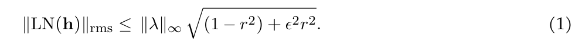
这表明，随着 outlier 变大，LayerNorm 之后特征范数的上界会减小，使网络能够通过改变 outlier 的幅度来重缩放特征范数。
为证明这一不等式，令
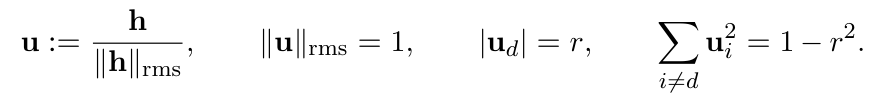
于是
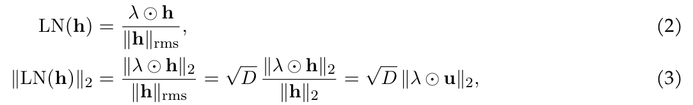
并且
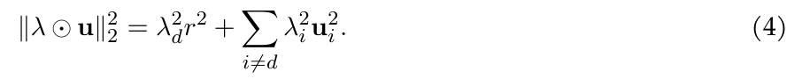
利用 \(\sum _{i\ne d} \lambda _{i}^{2}u_{i}^{2} \le \Vert \lambda _{-d}\Vert _{\infty }^{2} \sum _{i\ne d} u_{i}^{2} = \Vert \lambda _{-d}\Vert _{\infty }^{2}(1 - r^{2})\)，得到
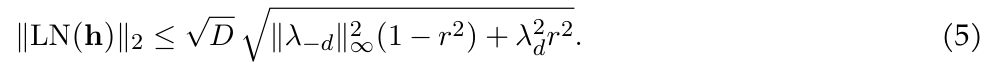
译注：推导按原式保留。原文定义 \(u = h / \Vert h\Vert _{rms}\)，但随后写 \(|u_{d}| = r\)、\(\sum _{i\ne d}u_{i}^{2} = 1 - r^{2}\)，并在式（3）使用 \(\sqrt{D}\Vert \lambda \odot u\Vert_2\)；这些后续等式对应的是 \(u=h/\lVert h\rVert_2\)，归一化定义前后不一致。原文此处将无中心化的均方根归一化写作 LN / LayerNorm，译文未改动其记号。
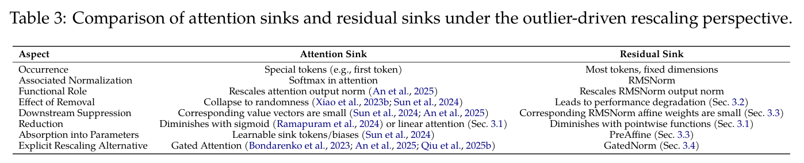
表 3 从 outlier 驱动的重缩放视角总结了 attention sink 与 residual sink 之间的对应关系。两种现象均出现在归一化层：attention sink 对应 softmax，residual sink 对应 RMSNorm。它们充当调制器，控制非 outlier 分量的尺度。虽然表现不同——attention sink 针对特定 token，residual sink 针对特定维度——但功能作用类似。二者均能够对下游表示进行重缩放。关键在于，两类 outlier 完成重缩放功能后都会受到主动抑制。Attention sink 的 value 向量范数较小，以及 residual sink 的 RMSNorm 仿射权重较小，为此提供了证据。移除归一化的架构修改能够消除这些 outlier，但会降低性能或稳定性。反过来，显式提供其他重缩放路径，例如 Gated Attention 或 GatedNorm，能够有效降低对 outlier 的依赖，同时保留甚至增强模型性能。
我们在一个 8 层稠密 Transformer 上评估本方法的端到端训练开销，使用 Megatron-LM（Shoeybi et al., 2019）中的 ZeRO-1 优化器配置。我们改变隐藏维度，同时将门控机制的低秩维度固定为 16。对于 PreAffine 变体，我们使用 Triton 实现自定义融合 kernel，以确保执行效率。
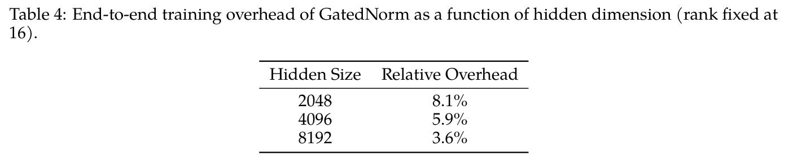
如表所示，相对开销随着模型规模增大而迅速下降。这一趋势由两个因素解释。首先，GatedNorm 的计算成本随隐藏维度线性增长，对低秩维度仅有较弱依赖（通过常数因子）；相比之下，attention 与 FFN 层中的主要 GEMM 运算随隐藏维度二次增长。因此，GatedNorm 在总计算量中的占比随着规模增大而愈加微不足道。
其次，kernel 启动开销在隐藏维度较小时更显著。在这种情况下，GatedNorm 包含多个轻量 kernel，其启动延迟可能造成执行气泡并降低硬件利用率。随着隐藏维度增大，每个 kernel 的工作量足以摊薄启动成本，从而改善流水线效率，并进一步降低相对开销。
第三，在 MoE 设置下，GatedNorm 的相对开销更小。MoE 模型具有显著的通信和路由成本，这些成本主导训练步耗时。由于 GatedNorm 仅引入轻量的局部计算，其对总步耗时的贡献在这种情况下被进一步摊薄，因此相对开销低于类似规模的稠密模型。
模型架构。我们在一组具有不同架构的 LLM 上评估方法，包括稠密与 MoE 变体。架构规格汇总于表 5。所有模型的 softmax attention head 维度均为 256，隐藏维度均为 2048。2B 模型是标准稠密 Transformer。相比之下，7B-A2B 和 24B-A3B 模型采用 MoE 架构，以混合配置结合线性与 softmax attention：softmax attention——
本句接第 15 页。
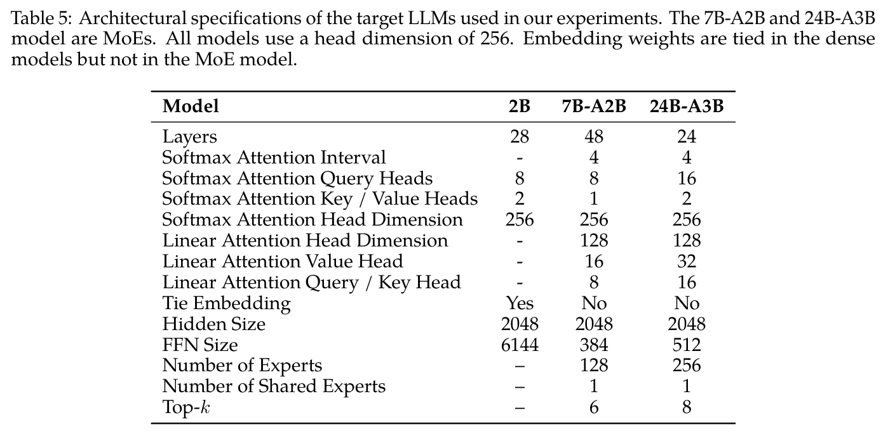
接第 14 页：
每隔 4 层应用一次，其余层使用线性 attention。
MoE 模型采用大量专家（7B-A2B 为 128 个，24B-A3B 为 256 个），使用 top-k 路由（分别为 \(k = 6\) 和 \(k = 8\)），并设置一个共享专家来保证基础容量。训练时使用全局负载均衡损失（Qiu et al., 2025a）。遵循大型稀疏架构的常见做法，稠密 2B 模型绑定 embedding 权重，MoE 模型则不绑定。FFN 扩展比例有显著差异：稠密模型使用宽 FFN（6144 维），而 MoE 模型中每个专家的 FFN 小得多（分别为 384 和 512），通过 EP 予以补偿。线性 attention head 使用较小维度（128），并采用独立的 query/key 与 value 投影，详见表格。
评估。我们在广泛的基准上评估模型性能，涵盖知识、推理、STEM、代码生成与多语言能力。具体而言，我们报告 MMLU-Redux 和 MMLU-Pro 的通用知识结果，SuperGPQA 和 GPQA-Diamond 的专家级科学推理结果，GSM8K 和 MATH 的数学问题求解结果，CruxEval、MultiPL-E 和 MBPP 的代码生成结果，以及 MMMLU 和 MGSM 的多语言理解结果。
MMLU-Redux（Gema et al., 2025）是原始 MMLU 基准的改进版本，提升了题目质量并减少歧义。MMLU-Pro（Wang et al., 2024）在此基础上扩展了更具挑战性、需要更深入推理的多跳问题。SuperGPQA（Du et al., 2025）和 GPQA-Diamond（Rein et al., 2024）由专家编写的研究生级科学问题组成，旨在评估高级领域知识。GSM8K（Cobbe et al., 2021）和 MATH（Hendrycks et al., 2021）分别评估小学数学和高等数学推理。CruxEval（Gu et al., 2024a）通过补全输入输出规格来测试代码生成，而 MultiPL-E（Cassano et al., 2023）和 MBPP（Austin et al., 2021）评估跨语言编程和入门级 Python 编程。MMMLU（OpenAI, 2024）和 MGSM（Shi et al., 2022）是 MMLU 和 GSM8K 的多语言扩展，覆盖数十种语言，以评估跨语言迁移。
统一优化策略。为缓解激活 outlier，我们将 SmoothQuant（Xiao et al., 2023a）作为通用预处理步骤。4096 条序列组成的校准集仅用于计算逐通道平滑因子，显式地将量化难度从激活迁移至权重。
量化配置。在这一平滑基线之上，我们评估两种与硬件相匹配的格式：
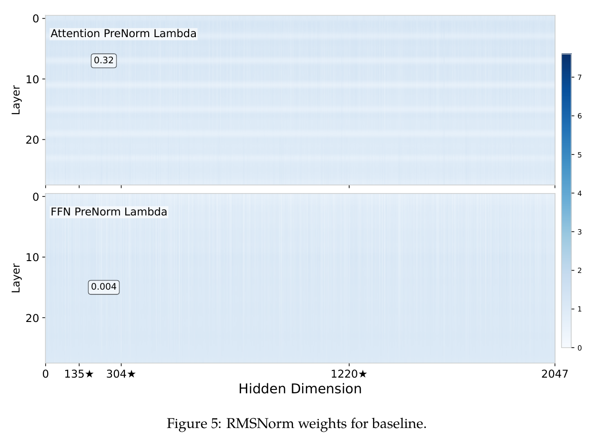
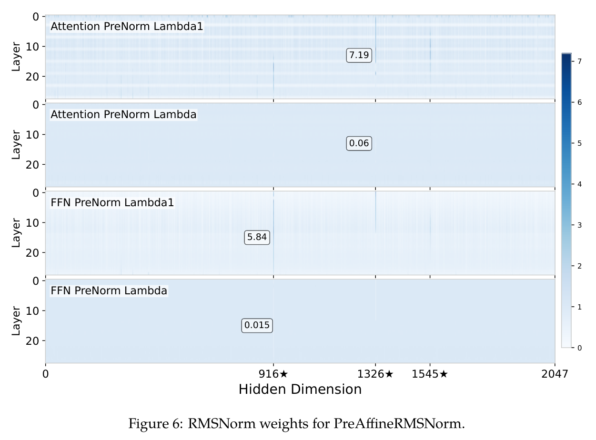
图 8 见第 17 页；第 17 页上方图 7 接续本页 A.5.1 的 RMSNorm 可视化。
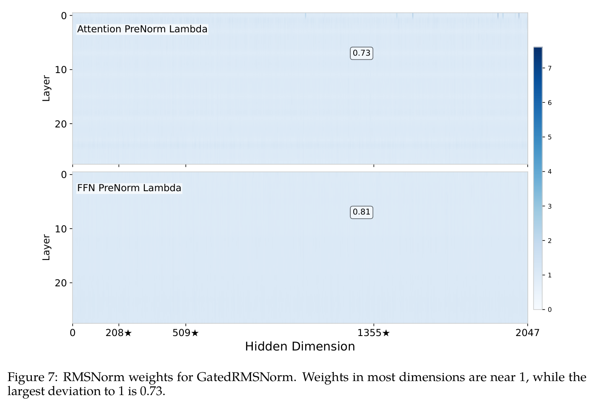
译注：图 7 的原英文图注将 0.73 称为“相对 1 的最大偏离”，图内标注的是权重值；按原图保留。
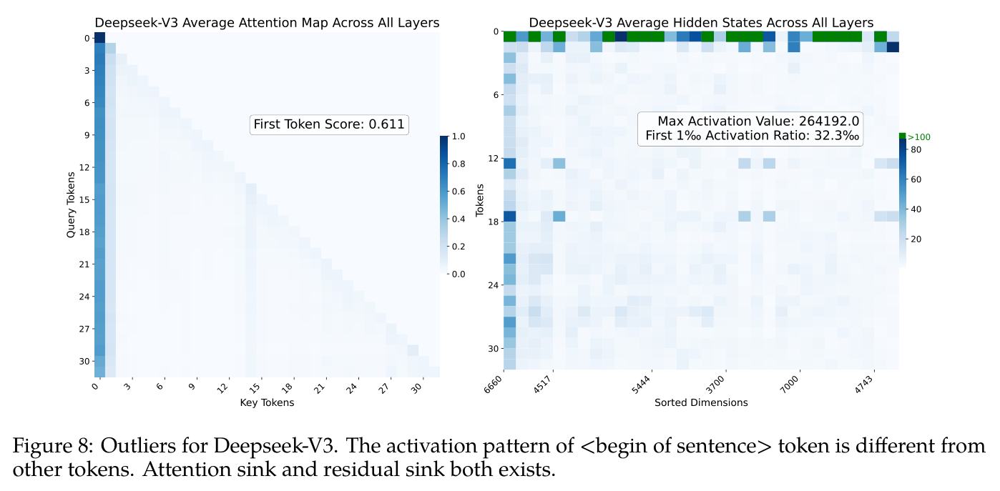